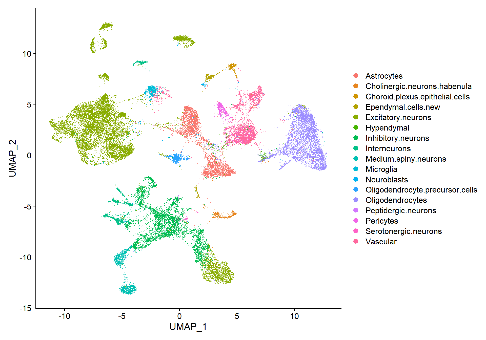

CosMx Data Insitutype Supervised Cell typing
LGA
03 septiembre 2025
Last updated: 2025-09-03
Checks: 7 0
Knit directory: CosMx_pipeline_LGA/
This reproducible R Markdown analysis was created with workflowr (version 1.7.1). The Checks tab describes the reproducibility checks that were applied when the results were created. The Past versions tab lists the development history.
Great! Since the R Markdown file has been committed to the Git repository, you know the exact version of the code that produced these results.
Great job! The global environment was empty. Objects defined in the global environment can affect the analysis in your R Markdown file in unknown ways. For reproduciblity it’s best to always run the code in an empty environment.
The command set.seed(20250517) was run prior to running
the code in the R Markdown file. Setting a seed ensures that any results
that rely on randomness, e.g. subsampling or permutations, are
reproducible.
Great job! Recording the operating system, R version, and package versions is critical for reproducibility.
Nice! There were no cached chunks for this analysis, so you can be confident that you successfully produced the results during this run.
Great job! Using relative paths to the files within your workflowr project makes it easier to run your code on other machines.
Great! You are using Git for version control. Tracking code development and connecting the code version to the results is critical for reproducibility.
The results in this page were generated with repository version cc8470c. See the Past versions tab to see a history of the changes made to the R Markdown and HTML files.
Note that you need to be careful to ensure that all relevant files for
the analysis have been committed to Git prior to generating the results
(you can use wflow_publish or
wflow_git_commit). workflowr only checks the R Markdown
file, but you know if there are other scripts or data files that it
depends on. Below is the status of the Git repository when the results
were generated:
Ignored files:
Ignored: .Rhistory
Ignored: .Rproj.user/
Ignored: NBClust-Plots/
Ignored: analysis/.Rhistory
Ignored: data/flatFiles/CoronalHemisphere/Run1000_S1_Half_exprMat_file.csv
Ignored: data/flatFiles/CoronalHemisphere/Run1000_S1_Half_fov_positions_file.csv
Ignored: data/flatFiles/CoronalHemisphere/Run1000_S1_Half_metadata_file.csv
Ignored: output/processed_data/Log/
Ignored: output/processed_data/RC/
Ignored: output/processed_data/SCT/
Ignored: output/processed_data/exprMat_unfiltered.RDS
Ignored: output/processed_data/fov_positions_unfiltered.RDS
Ignored: output/processed_data/metadata_unfiltered.RDS
Ignored: output/processed_data/negMat_unfiltered.RDS
Ignored: output/processed_data/seu_filtered.RDS
Ignored: output/processed_data/seu_semifiltered.RDS
Unstaged changes:
Modified: CosMx_pipeline_LGA.Rproj
Modified: output/performance_reports/0.0_data_loading_PR.csv
Modified: output/performance_reports/1.0_qc_and_filtering_PR.csv
Modified: output/performance_reports/2.0_normalization_PR.csv
Modified: output/performance_reports/3.0_dimensional_reduction_PR.csv
Deleted: output/performance_reports/4.0_insitutype_cell_typing_PR.csv
Deleted: output/performance_reports/4.1_insitutype_unsup_clustering_PR.csv
Deleted: output/performance_reports/4.2_seurat_unsup_clustering_PR.csv
Deleted: output/performance_reports/5.0_RC_normalization_PR.csv
Deleted: output/performance_reports/5.1_RC_dimensional_reduction_PR.csv
Deleted: output/performance_reports/6.0_Log_normalization_PR.csv
Deleted: output/performance_reports/6.1_Log_dimensional_reduction_PR.csv
Deleted: output/performance_reports/pipeline_PR.csv
Note that any generated files, e.g. HTML, png, CSS, etc., are not included in this status report because it is ok for generated content to have uncommitted changes.
These are the previous versions of the repository in which changes were
made to the R Markdown
(analysis/4.0_insitutype_cell_typing.Rmd) and HTML
(docs/4.0_insitutype_cell_typing.html) files. If you’ve
configured a remote Git repository (see ?wflow_git_remote),
click on the hyperlinks in the table below to view the files as they
were in that past version.
| File | Version | Author | Date | Message |
|---|---|---|---|---|
| html | 43970ac | lga-uoc | 2025-09-02 | Build site. |
| Rmd | 78c8449 | lga-uoc | 2025-09-02 | Add Rmds files in analysis |
Dependencies
library(data.table) # Efficient data management
library(Matrix) # Sparse matrices
library(here) # Enhanced file referencing in project-oriented workflows
library(dplyr) # For the use of pipes %>%
library(kableExtra) # For table formatting
library(Seurat) # Seurat object
library(ggplot2) # Graphics
library(patchwork) # Layout graphics
library(pheatmap) # Heatmap plot
#remotes::install_github("Nanostring-Biostats/InSituType")
library(InSituType)Load the data
First of all, data needs to be loaded into the session. For this script, two inputs will be needed:
- The Seurat object from the “Dimensional reduction” script.
- The Negative probe matrix from the “Data loading” script.
# Indicate the object folder
folder <- "SCT" # Choose between "RC", "Log" or "SCT"
if (!folder %in% c("RC", "Log", "SCT")) {
stop("The selected folder is invalid, choose: 'RC', 'Log' or 'SCT'")
}
# Load Seurat object
name <- paste0("seu_", folder, "_um.RDS")
seu <- readRDS(here("output","processed_data",folder,name))
# Load negMat
negcounts <- readRDS(here("output","processed_data","negMat_unfiltered.RDS"))In this pipeline, cell typing will be done using the reference-based supervised classification by InSituType. This method was developed by Nanostring, owner of the CosMx SMI technology, and is, therefore, optimized to work with this type of data specifically.
Prepare the data
In order to apply the InSituType algorithm, it is necessary to provide the function with the following information:
- Raw expression counts matrix (not normalized), with cells in columns
and genes in rows.
- A vector of the mean negative control value per cell.
# Extract raw counts from the Seurat object
counts <- t(seu@assays[["RNA"]]@counts) # RNA assay counts are not-normalized
# Note the matrix is transposed to have cells in rows and genes in cols
# Ensure negcounts has the same cells as counts
if (!identical(rownames(counts), rownames(negcounts))) {
negcounts <- negcounts[rownames(counts),] # Filter and/or re-order negcounts
}
# Calculate Negative control means per cell
negmean <- rowMeans(negcounts)Additionally, the function can take the following optional inputs, if available:
- A vector of background counts per gene in each cell –>
Insitutype can automatically estimate this with the negative control
counts.
- A reference profile matrix with genes in rows and cell types in
columns –> This is only necessary for supervised or
semi-supervised clustering.
- Additional information incorporated as “cohort”, such as spatial coordinates, inmunofluorescence stains or pre-computed spatial niches –> Including this option is low-risk, as it will not be taken into account if it is uninformative.
For this example, immunofluoresce data will be included as a cohort.
# Extract Immunoflurence data
imm_fluor <- seu@meta.data %>%
select(contains(c("Mean","Max"))) %>%
select(-contains("DAPI"))
# Set as cohort with InSituType function "fastCohorting"
cohort <- fastCohorting(imm_fluor, gaussian_transform = TRUE)
# This function creates "groups" or similar cells based on their immunofluoresce,
# as that is the input I have given it
table(cohort)cohort
1 2 3 4 5 6 7 8 9 10
5157 12430 10502 2766 4056 3063 2531 1598 3138 2677 As it can be observed, the “fastCohorting” function has created “groups” of similar cells based on their immunofluoresce abundances.
Reference profile
For the supervised version of InSituType, a reference profile is needed. For that, Nanostring provides several public reference profiles, either from scRNA-seq or CosMx data. However, the function can also take other sources-profiles as long as they have the appropriate formatting.
For this case, the most adequate profile would be a Mouse Brain CosMx reference profile.
## Code adapted from Scratch Space vignette
# Load reference profile
url <- "https://raw.githubusercontent.com/Nanostring-Biostats/CosMx-Cell-Profiles/refs/heads/main/Mouse/Brain/MouseBrain.profiles.csv"
refprofiles <- read.csv(url, row.names = 1, header = TRUE)
refprofiles <- refprofiles[is.element(rownames(refprofiles), colnames(counts)), ]
# Note that only shared genes with our counts matrix have been kept as reference
# Check for genes not present in the reference
missing_genes <- setdiff(colnames(counts), rownames(refprofiles)) Astrocytes.Bergmann.glia Astrocytes.cortex.hippocampus
6330403K07Rik 0.003680276 0.3334367
Abca2 0.037032777 0.5512775
Abi1 0.062909718 0.8180032
Abi2 0.017481311 0.4109733
Astrocytes.thalamus.hypothalamus Cajal.Retzius.cells
6330403K07Rik 0.7043284 0.01595745
Abca2 0.5628358 0.11170213
Abi1 0.8959701 0.02659574
Abi2 0.4073134 0.01595745- Dimensions: 950 genes and 56 cell types.
- Cell types: Astrocytes.Bergmann.glia,
Astrocytes.cortex.hippocampus, Astrocytes.thalamus.hypothalamus,
Cajal.Retzius.cells, CCK.interneurons, Cholinergic.neurons.habenula,
Choroid.plexus.epithelial.cells, Committed.oligodendrocytes,
D1.medium.spiny.neurons, D2.medium.spiny.neurons, Dopaminergic.neurons,
Ependymal.cells, Excitatory.neurons.amygdala,
Excitatory.neurons.di.mesencephalon, Excitatory.neurons.hippocampal.CA1,
Excitatory.neurons.hippocampal.CA2, Excitatory.neurons.hippocampal.CA3,
Excitatory.neurons.layer.1.piriform, Excitatory.neurons.layer.2.3,
Excitatory.neurons.layer.4, Excitatory.neurons.layer.5,
Excitatory.neurons.layer.5.6, Excitatory.neurons.layer.6,
Excitatory.neurons.telencephalon, Granule.neurons,
Hindbrain.excitatory.neurons, Hindbrain.inhibitory.neurons, Hypendymal,
Inhibitory.interneurons, Inhibitory.neurons.amygdala,
Inhibitory.neurons.habenula.hypothalamus,
Inhibitory.neurons.habenula.thalamus,
Inhibitory.neurons.reticular.nucleus,
Interneuron.selective.interneurons, Interneurons,
Mature.oligodendrocytes, Microglia, Myelin.forming.oligodendrocytes,
Neuroblasts, Neurogliaform.cells, Newly.formed.oligodendrocytes,
Olfactory.bulb.inhibitory.neurons, Olfactory.ensheathing.cells,
Oligodendrocyte.precursor.cells, Peptidergic.neurons, Pericytes,
Perivascular.macrophages, Purkinje.cells, Radial.glia,
Serotonergic.neurons, T.cell, Tanycytes,
Telencephalon.inhibitory.neurons, Vascular.endothelial.cells,
Vascular.leptomeningeal.cells, Vascular.smooth.muscle.cells.
- Missing genes: 0 –> …
This reference profile has the same genes as the expression matrix.
## Code adapted from Scratch Space vignette
# Heatmap of reference profile
pheatmap(sweep(refprofiles, 1, pmax(apply(refprofiles, 1, max), 0.2), "/"), col = colorRampPalette(c("white", "darkblue"))(100))
| Version | Author | Date |
|---|---|---|
| 43970ac | lga-uoc | 2025-09-02 |
Supervised InSituType classification
In this method, the user provides a reference profile and no number of clusters, this way the function will cluster the cells according to the cell types of the reference only. However, if desired, a number of clusters could be provided to perform semi-supervised clustering.
## Code adapted from the InSituType vignette
# Supervised Insitutye classification with immunofluoresce cohort
sup <- insitutype(
x = counts,
neg = negmean,
assay_type = "RNA",
cohort = cohort,
bg = NULL, # The function will estimate it automatically
reference_profiles = refprofiles,
n_clusts = 0, # Insert the nº of expected unknown cluster for semi-supervised
n_phase1 = 200,
n_phase2 = 500,
n_phase3 = 2000,
n_starts = 1,
max_iters = 5
)As a result the function provides a list with:
- Vector of cluster assignments.
- Vector of probabilities, or confidence, of each cell’s
cluster.
- Matrix of log-likelihoods with cells on rows and clusters in
columns.
- Matrix of cluster-specific expression profiles.
## Code adapted from the InSituType vignette
# Classes
n_clus <- length(unique(sup$clust))
# Example of probabilities
round(head(sup$prob), 2)c_1_1_1 c_1_1_2 c_1_1_3 c_1_1_4 c_1_1_5 c_1_1_6
1 1 1 1 1 1 Min. 1st Qu. Median Mean 3rd Qu. Max.
0.2624 1.0000 1.0000 0.9888 1.0000 1.0000 As it can be observed, the algorithm has detected 44 cell types from the reference profile in the example dataset, with the majority of cells presenting a high confidence of belonging to the selected cluster.
Now, it might be interesting to explore the confidence ratios in order to select an appropriate threshold for low probability assignments, and/or see if the low probabilities are concentrated in any particular cluster.
Exploration of cell assignment scores
As per the InSituType vignette, clusters with an average probability of less than 75% are unreliable. Therefore, for the exploration a threshold of 75% will be selected.
# Determine initial low confidence cells
thresh <- 0.75
low_conf_cells <- names(sup$prob[sup$prob < thresh])
n_low <- length(low_conf_cells)
perc_low <- round(n_low / length(sup$prob) * 100, 1)
# Create dataframe for plotting
df <- data.frame(clust = sup$clust,
prob = sup$prob)# Histogram of confidence
p1 <- ggplot(df, aes(x = prob)) +
geom_histogram(bins = 50, fill = "lightblue", colour = "black") +
geom_vline(xintercept = thresh, colour = "red", lwd = 1) +
ggtitle(paste("Nº cells with prob <", thresh, ":", n_low)) +
labs(title = paste("Nº cells with prob <", thresh, ":", n_low),
x = "Assignment Confidence (%)",
y = "Nº Cells")
# Boxplots of confidence by cluster
p2 <- ggplot(df, aes(x = clust, y = prob)) +
geom_boxplot() +
geom_hline(yintercept = thresh, colour = "red", lwd = 1) +
labs(title = "Confidence per Cluster",
x = "Cluster",
y = "Assignment Confidence (%)") +
theme(axis.text.x = element_text(angle = 90, hjust = 1))
# Arrange plots
p1 | p2
| Version | Author | Date |
|---|---|---|
| 43970ac | lga-uoc | 2025-09-02 |
All clusters have an average probability of more than 75%, although many outliers are observed. Finally, there are 885 (1.8 %) cells with an assignment confidence of less than 75 %, showing that most of the cells have been assigned very confidently according to the reference profile.
Flightpath exploration
The InSituType package includes an interesting visualization tool called “flightpath_plot”, which represents cells according to their cluster probabilities. This will allow refining the clustering assignation.
## Code adapted from the InSituType vignette
# Create custom color palette
cols <- gg_color_hue(n_clus)
names(cols) <- unique(sup$clust)
# Flightpath plot
flightpath_plot(insitutype_result = sup,
col = cols[sup$clust])
| Version | Author | Date |
|---|---|---|
| 43970ac | lga-uoc | 2025-09-02 |
As before, it can be seen that all clusters are very well defined, with average probabilities of nearly 100%.
Clustering refining
After exploration, using the function “refineClusters”, the user can determine whether some clusters/classes should be deleted, merged or subclustered.
In this occasion, no refining would be necessary in terms of average probabilities of clusters. However, some clusters could be merged to reduce the detail of the annotation, for example.
For this example, where there is not an intention of answering specific biological questions or find rare populations, 44 clusters might be too much detail. Therefore, several merges will be made, while maintaining biologically meaningful clusters.
# Self proposed merges based on biologically similar cells
merges <- c(
# Astrocytes
"Astrocytes.cortex.hippocampus" = "Astrocytes",
"Astrocytes.thalamus.hypothalamus" = "Astrocytes",
# Ependymal.cells
"Ependymal.cells" = "Ependymal.cells",
"Tanycytes" = "Ependymal.cells",
# Excitatory.neurons
"Excitatory.neurons.amygdala" = "Excitatory.neurons",
"Excitatory.neurons.di.mesencephalon" = "Excitatory.neurons",
"Excitatory.neurons.hippocampal.CA1" = "Excitatory.neurons",
"Excitatory.neurons.hippocampal.CA2" = "Excitatory.neurons",
"Excitatory.neurons.hippocampal.CA3" = "Excitatory.neurons",
"Excitatory.neurons.layer.1.piriform" = "Excitatory.neurons",
"Excitatory.neurons.layer.2.3" = "Excitatory.neurons",
"Excitatory.neurons.layer.4" = "Excitatory.neurons",
"Excitatory.neurons.layer.5" = "Excitatory.neurons",
"Excitatory.neurons.layer.6" = "Excitatory.neurons",
"Excitatory.neurons.telencephalon" = "Excitatory.neurons",
"Granule.neurons" = "Excitatory.neurons",
# Interneurons
"CCK.interneurons" = "Interneurons",
"Inhibitory.interneurons" = "Interneurons",
"Interneuron.selective.interneurons" = "Interneurons",
"Neurogliaform.cells" = "Interneurons",
# Inhibitory.neurons
"Inhibitory.neurons.amygdala" = "Inhibitory.neurons",
"Inhibitory.neurons.habenula.hypothalamus" = "Inhibitory.neurons",
"Inhibitory.neurons.habenula.thalamus" = "Inhibitory.neurons",
"Inhibitory.neurons.reticular.nucleus" = "Inhibitory.neurons",
"Telencephalon.inhibitory.neurons" = "Inhibitory.neurons",
# Medium.spiny.neurons
"D1.medium.spiny.neurons" = "Medium.spiny.neurons",
"D2.medium.spiny.neurons" = "Medium.spiny.neurons",
# Oligodendrocytes
"Committed.oligodendrocytes" = "Oligodendrocytes",
"Mature.oligodendrocytes" = "Oligodendrocytes",
"Myelin.forming.oligodendrocytes" = "Oligodendrocytes",
"Newly.formed.oligodendrocytes" = "Oligodendrocytes",
# Vascular
"Perivascular.macrophages" = "Vascular",
"Vascular.endothelial.cells" = "Vascular",
"Vascular.leptomeningeal.cells" = "Vascular",
"Vascular.smooth.muscle.cells" = "Vascular"
)
## Code adapted from the InSituType vignette
# Clustering refining
newclusts <- refineClusters(logliks = sup$logliks,
assay_type = "RNA",
merges = merges,
to_delete = NULL,
subcluster = NULL,
counts = counts,
neg = negmean)Add annotations to Seurat object
Now, annotation is ready to be included in the Seurat object for UMAP visualization.
# Add new metadata column to seurat object
seu$IST_sup_ann <- as.factor(sup$clust) # Original clusters
seu$IST_sup_ann_refined <- as.factor(newclusts$clust) # Refined clusters
# Set the refined version as default idents
Idents(seu) <- seu$IST_sup_ann_refined# Create custom color palettes
n <- length(unique(Idents(seu)))
cols <- gg_color_hue(n)
# DimPlot of selected resolution
DimPlot(seu, reduction = "umap", label = FALSE, cols = cols, raster = FALSE)
| Version | Author | Date |
|---|---|---|
| 43970ac | lga-uoc | 2025-09-02 |
Finally, the visualization of nFeature and nCount allows to identify clusters with better/lower representation by the CosMx panel.
## Code adapted from CosMxLite vignette
## Points are removed as CosMx datasets can contain over 1 million cells and may hide the violin plot
# Violin plot
VlnPlot(seu, features = c("nFeature_RNA", "nCount_RNA"), ncol = 1, pt.size = 0,
group.by = "IST_sup_ann_refined") &
theme(axis.text.x = element_text(angle = 45, size = 8))
| Version | Author | Date |
|---|---|---|
| 43970ac | lga-uoc | 2025-09-02 |
Final spatial visualizations
Now that cells have been annotated, visualizing them in their spatial context becomes more informative. For example, all cells can be visualized simultaneously in the sample or one cell type can be specifically highlighted:
## Code adapted from Seurat Spatial vignette
p1 <- ImageDimPlot(seu, fov = "globalFOV", axes = TRUE, cols = cols) +
theme_classic()
p2 <- ImageDimPlot(seu, fov = "globalFOV", axes = TRUE, cols = cols[13],
cells = WhichCells(seu, idents = "Oligodendrocytes")) +
ggtitle("Oligodendrocyte") +
theme_minimal() +
theme(plot.title = element_text(face = "bold", hjust = 0.5))
# Arrange plots
p1 + p2
| Version | Author | Date |
|---|---|---|
| 43970ac | lga-uoc | 2025-09-02 |
Another interesting visualization would be to plot gene expression markers in its spatial context. For example, one typical maker for Oligodendrocytes is Olig1:
## Code adapted from Seurat Spatial vignette
## Points are removed from violin plots as CosMx datasets can contain over 1 million cells and may hide the violin plot
VlnPlot(seu, features = "Olig1",pt.size = 0, y.max = 20) + NoLegend()
| Version | Author | Date |
|---|---|---|
| 43970ac | lga-uoc | 2025-09-02 |
As expected, it is highly expressed in Oligodendrocytes and Oligodendrocyte precursor cells, but it can also be observed in its spatial context:
## Code adapted from CosMxLite vignette
p1 <- ImageFeaturePlot(seu, fov = "globalFOV", features = "Olig1") +
theme_classic() +
theme(plot.title = element_text(face = "bold", hjust = 0.5))
p2 <- ImageDimPlot(seu, fov = "globalFOV", axes = TRUE,
cols = c(cols[12], cols[13]),
cells = WhichCells(seu,
idents = c("Oligodendrocyte.precursor.cells",
"Oligodendrocytes"))) +
ggtitle("Oligodendrocyte and \n Oligodendrocyte precursor cells") +
theme_minimal() +
theme(plot.title = element_text(face = "bold", hjust = 0.5),
legend.position = "bottom")
# Arrange plots
p1 + p2
| Version | Author | Date |
|---|---|---|
| 43970ac | lga-uoc | 2025-09-02 |
Performance and Session Info
Performance Report
| Chunk | Time_sec | Memory_Mb |
|---|---|---|
| Libraries | 5.17 | 459.0 |
| LoadData | 5.11 | 1215.0 |
| PrepData | 0.37 | 205.5 |
| PrepCohort | 7.15 | 2.6 |
| LoadRef | 0.89 | 1.0 |
| ExploringFOVpositions | 0.28 | 0.1 |
| VizRef | 0.70 | 6.1 |
| Sup | 647.48 | 63.5 |
| SupProb | 0.31 | 0.2 |
| ExporingSupProb | 0.31 | 0.0 |
| VizSupProb | 3.97 | 13.6 |
| VizFPSup | 3.66 | 12.8 |
| RefinedSup | 1.46 | 8.2 |
| AddAnn | 0.35 | 1.0 |
| VizAnn1 | 1.62 | 5.7 |
| VizAnn2 | 0.94 | 4.8 |
| SavingSeuObj | 33.57 | 0.0 |
| SpatialViz | 3.55 | 13.0 |
| MarkerViz1 | 0.70 | 3.2 |
| SpatialViz2 | 3.76 | 8.8 |
| Total | 721.35 | 2024.1 |
R version 4.4.3 (2025-02-28 ucrt)
Platform: x86_64-w64-mingw32/x64
Running under: Windows 10 x64 (build 19045)
Matrix products: default
locale:
[1] LC_COLLATE=Spanish_Spain.utf8 LC_CTYPE=Spanish_Spain.utf8
[3] LC_MONETARY=Spanish_Spain.utf8 LC_NUMERIC=C
[5] LC_TIME=Spanish_Spain.utf8
time zone: Europe/Madrid
tzcode source: internal
attached base packages:
[1] stats graphics grDevices utils datasets methods base
other attached packages:
[1] InSituType_2.0 pheatmap_1.0.12 patchwork_1.3.0 ggplot2_3.5.1
[5] SeuratObject_4.1.4 Seurat_4.4.0 kableExtra_1.4.0 dplyr_1.1.4
[9] here_1.0.1 Matrix_1.7-2 data.table_1.17.0 workflowr_1.7.1
loaded via a namespace (and not attached):
[1] RcppAnnoy_0.0.22 splines_4.4.3
[3] later_1.4.1 tibble_3.2.1
[5] polyclip_1.10-7 lifecycle_1.0.4
[7] rprojroot_2.0.4 globals_0.16.3
[9] processx_3.8.4 lattice_0.22-6
[11] MASS_7.3-64 SnowballC_0.7.1
[13] magrittr_2.0.3 plotly_4.11.0
[15] sass_0.4.9 rmarkdown_2.29
[17] jquerylib_0.1.4 yaml_2.3.10
[19] httpuv_1.6.15 sctransform_0.4.2
[21] askpass_1.2.1 sp_2.2-0
[23] spatstat.sparse_3.1-0 reticulate_1.40.0
[25] cowplot_1.1.3 pbapply_1.7-4
[27] RColorBrewer_1.1-3 abind_1.4-8
[29] zlibbioc_1.52.0 Rtsne_0.17
[31] GenomicRanges_1.58.0 purrr_1.0.2
[33] BiocGenerics_0.52.0 git2r_0.36.2
[35] GenomeInfoDbData_1.2.13 IRanges_2.40.1
[37] S4Vectors_0.44.0 ggrepel_0.9.6
[39] irlba_2.3.5.1 listenv_0.9.1
[41] spatstat.utils_3.1-5 umap_0.2.10.0
[43] goftest_1.2-3 RSpectra_0.16-2
[45] bigmemory_4.6.4 spatstat.random_3.4-1
[47] fitdistrplus_1.2-4 parallelly_1.41.0
[49] svglite_2.1.3 leiden_0.4.3.1
[51] codetools_0.2-20 DelayedArray_0.32.0
[53] xml2_1.3.6 tidyselect_1.2.1
[55] UCSC.utils_1.2.0 farver_2.1.2
[57] matrixStats_1.4.1 stats4_4.4.3
[59] spatstat.explore_3.5-2 jsonlite_1.8.9
[61] progressr_0.15.1 ggridges_0.5.6
[63] survival_3.8-3 systemfonts_1.1.0
[65] tools_4.4.3 ragg_1.3.3
[67] ica_1.0-3 Rcpp_1.0.13-1
[69] glue_1.8.0 gridExtra_2.3
[71] SparseArray_1.6.0 xfun_0.49
[73] MatrixGenerics_1.18.0 GenomeInfoDb_1.42.1
[75] withr_3.0.2 fastmap_1.2.0
[77] openssl_2.2.2 callr_3.7.6
[79] digest_0.6.37 R6_2.5.1
[81] mime_0.12 textshaping_0.4.1
[83] colorspace_2.1-1 scattermore_1.2
[85] tensor_1.5.1 spatstat.data_3.1-6
[87] tidyr_1.3.1 generics_0.1.3
[89] httr_1.4.7 htmlwidgets_1.6.4
[91] S4Arrays_1.6.0 whisker_0.4.1
[93] uwot_0.2.3 pkgconfig_2.0.3
[95] gtable_0.3.6 fastglm_0.0.3
[97] lmtest_0.9-40 SingleCellExperiment_1.28.1
[99] XVector_0.46.0 htmltools_0.5.8.1
[101] scales_1.3.0 Biobase_2.66.0
[103] png_0.1-8 spatstat.univar_3.1-4
[105] bigmemory.sri_0.1.8 knitr_1.49
[107] rstudioapi_0.17.1 reshape2_1.4.4
[109] uuid_1.2-1 nlme_3.1-167
[111] cachem_1.1.0 zoo_1.8-14
[113] stringr_1.5.1 KernSmooth_2.23-26
[115] parallel_4.4.3 miniUI_0.1.1.1
[117] pillar_1.10.0 grid_4.4.3
[119] vctrs_0.6.5 RANN_2.6.2
[121] lsa_0.73.3 promises_1.3.2
[123] xtable_1.8-4 cluster_2.1.8
[125] evaluate_1.0.1 cli_3.6.3
[127] compiler_4.4.3 rlang_1.1.4
[129] crayon_1.5.3 future.apply_1.11.3
[131] labeling_0.4.3 mclust_6.1.1
[133] ps_1.8.1 getPass_0.2-4
[135] plyr_1.8.9 fs_1.6.5
[137] stringi_1.8.4 viridisLite_0.4.2
[139] deldir_2.0-4 munsell_0.5.1
[141] lazyeval_0.2.2 spatstat.geom_3.5-0
[143] sparseMatrixStats_1.18.0 future_1.34.0
[145] shiny_1.10.0 SummarizedExperiment_1.36.0
[147] ROCR_1.0-11 igraph_2.1.2
[149] bslib_0.8.0